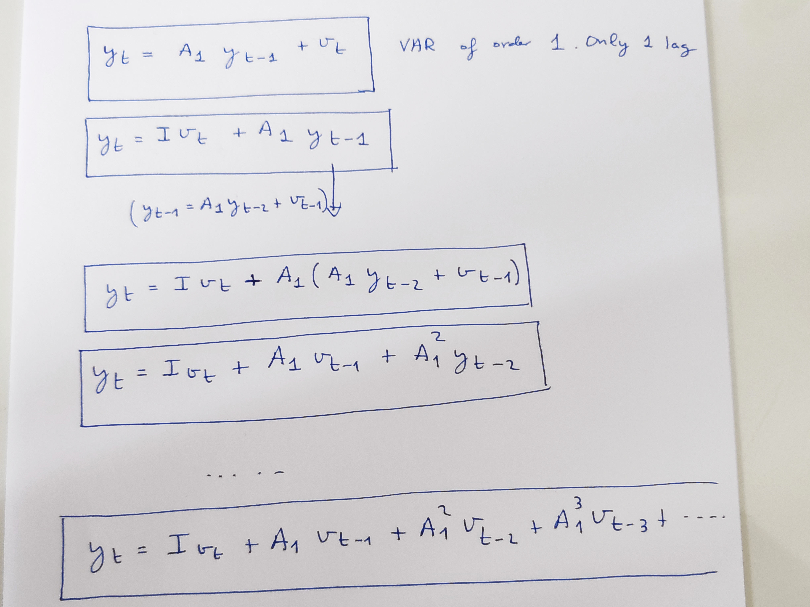
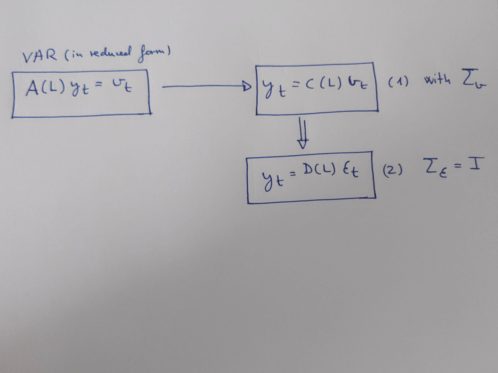
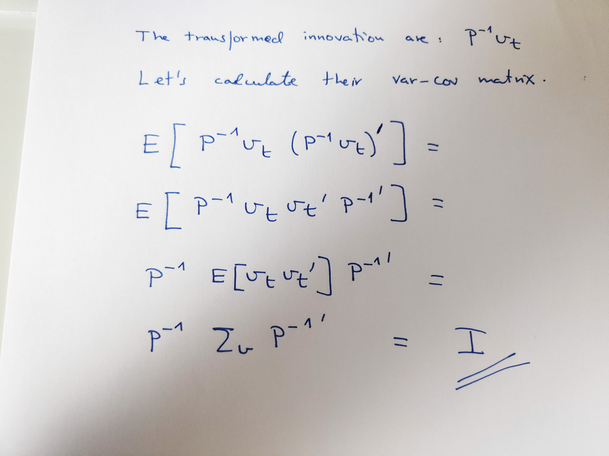
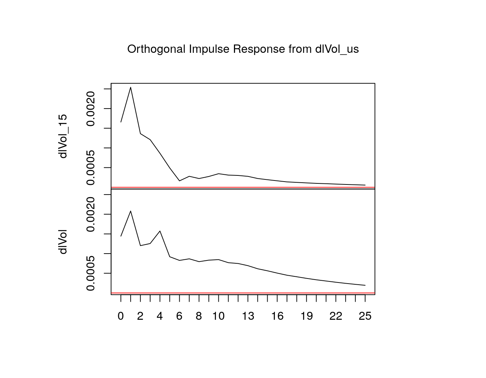
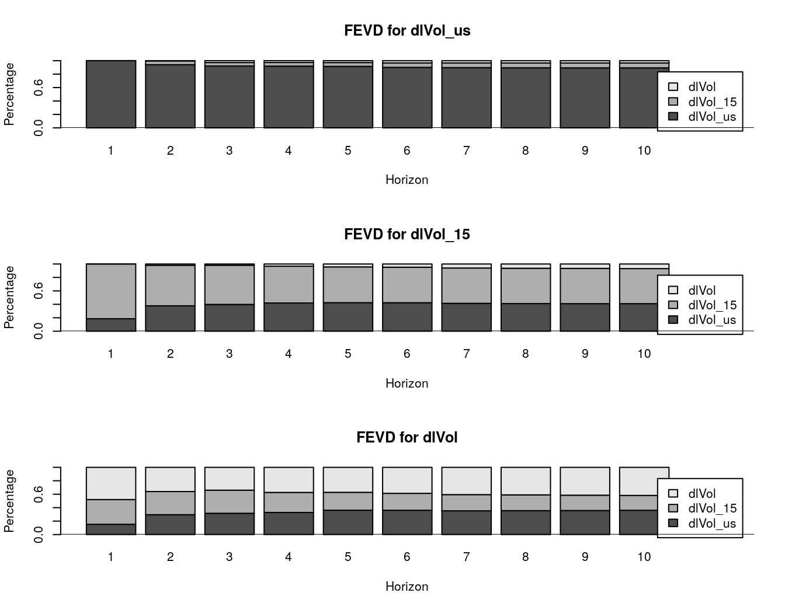

As finally, instead of 5 session we are going to have almost 3 sessions, then instead of a mini-course we are going to have a express-mini-course: a quick and dirty introduction to the basics of structural VAR models.
Imagine you are a researcher, or better, imagine that you are the the Economy Minister of a European country, for instance Spain, and you need to know how your country is influenced by economic external forces. We are going to use an statistical approach to try to solve the problem.That is we are going to use a statistical model. But which one? VAR models of course, this is the subject of the mini-course.
OK, but the original question (“how your country is influenced by economic external forces?”) is too wide to be tractable. Let’s made the question more specific. We have heard that there exists an international cycle and an European cycle, then the question is how Spain reacts to the international and European cycle. What are their influence in the Spanish economy.
Even more precisely, we are going to try to answer two questions:
What will happen to Spanish economy if something positive (a positive shock) happens in the international cycle or in the European business cycle. (IRF)
What is the importance of international and European cycle in the Spanish economic fluctuations? (FEVD)
OK, we are going to use statistical models, then we will need data. But wait, we already have data, last class we have downloaded some variables. We have downloaded from Eurostat a bunch of series. In particular we are going to use 3 series of “GDP volume” for USA, E15 and our country, in that case Spain.
To think: we will use 3 variables. Are they enough to answer the two questions or we are going to need more variables/information?
We are going to use a statistical approach and we have 3 variables. We can think that the 3 variables are a system where each variable influence the others others, they are interdependent. For instance, changes in US (as a proxy of the international cycle) will impact Spain and Europe. Changes in Europe will also impact on the international economy and of course in the Spanish economy. That is, I think we should treat the 3 variables as endogenous.
Then … what type of statistical models we could use? For instance we could use “Simultaneous equations”. But wait, those systems were criticised by Sims in 1980 because they use that he called “incredible identification restrictions”.
OK, let’s follow Sims’s 1980 proposal and use VAR models. First, before to estimate the VAR model, we have to specify, to write it down.
Well, a VAR model is really “easy” to specify. You only need to select a bunch of variables to answer your questions. We have already done that. We have selected 3 variables, and, following Sims’s proposal, we are going to:
treat all variables as endogenous (and first estimate an unrestricted model in a reduced form). No prior knowledge is used except to decide which variables should enter the system.
To think: in the last sentence there is a tricky part “first estimate an unrestricted model in a reduced form”. Try to understand it. What does mean? It’s not easy if you don’t have the right background. We will try at class.
Our model is described by this set of equations:
\[\left\{ \begin{array}{c} US_{t}= \beta US_{t-1} + \beta US_{t-2} + \beta E15_{t-1} + \beta E15_{t-2} + \beta ES_{t-1} + \beta ES_{t-2} + v_{t}^{US} \\ E15_{t}= \beta US_{t-1} + \beta US_{t-2} + \beta E15_{t-1} + \beta E15_{t-2} + \beta ES_{t-1} + \beta ES_{t-2} + v_{t}^{E15} \\ ES_{t}= \beta US_{t-1} + \beta US_{t-2} + \beta E15_{t-1} + \beta E15_{t-2} + \beta ES_{t-1} + \beta ES_{t-2} + v_{t}^{ES} \end{array}% \right\} \]
But, it’s better to write the model in a more compact form:
\[y_{t}~=A_{1}y_{t-1}+A_{2}y_{t-2}+v_{t}\]
The model has only two lags, but in general the VAR would be:
\[y_{t}~=A_{1}y_{t-1}+A_{2}y_{t-2}+\ \ ...\ \ +A_{p}y_{t-p}+v_{t}\ \ \ \ \ \ \ \ \ \ [2]\]
Model \([2]\) can be written using a polynomial in the lag operator as:
\[A(L)y_{t}=v_{t}\ \ \ \ \ \ \ \ \ \ [3]\]
with \(A(L)=(I_{K}-A_{1}L^{1}-A_{2}L^{2}-...-A_{p}L^{p})\)
OK, but there is something that we have to solve: we have to choose how many lags will have our model, 2, 3 , 4? OK, but this will be in a moment, first we have to talk a little about the estimation method we are going to use to estimate our model.
Well, you should know that, if the system is stationary then, as all the equations in the VAR share the same set of regressors and all of them are lagged variables, the VAR could be estimated efficiently by OLS for each equation separately.
BUT, be aware that, in order to estimate the system by OLS is crucial that the error terms (\(v_{t}\)) should NOT to be autocorrelated.
Remember also that in the context of VAR methodology, usually the error terms (\(v_{t}\)) are called innovations.
Besides that, if the innovations are normally distributed (Gaussian) then we could apply usual inference methods, like t-test.
To think: VAR models assume \(v_{t}\rightarrow N(0,\Sigma _{v})\). Do you think there are contemporaneous correlation among the innovation? Do you think the innovations are autocorrelated? Be aware that they are completely different questions
In plain English: before to use a VAR models we have to check if the system of variables is stationary, then, as all of the regressors are in the past \(y_{t-k}\), they are “like-exogenous” variables and then we could estimate the parameters of the model by OLS, BUT remember that the \(v_{t}\) should shown no autocorrelation; that is we should check, after estimation, that the model residuals \(\widehat{v}_{t}\) shown NO-autocorrelation
Besides that, if the innovations \((v_{t})\) follow a Gaussian distribution then we could use the usual inference methods. Then, we should check also,the normality of the residuals \((\widehat{v}_{t})\).
OK. Let’s practise this in R:
library("tidyverse")
library("forecast")
#library("dygraphs")
library("vars") #- the package used to estimate VAR models# load the data for Spain ---------------------------------------------------
df <- read_csv(here::here("datos", "my_data_ES.csv")) #- You should load YOUR DATA
#- we are going to use only 3/4 the variables: Vol, Vol_15, Vol_us & time
data <- df %>% dplyr::select(time, Vol_us, Vol_15, Vol)#- some data munging to obtaining the common sample of the 3 variables ----------------------------------
#- first getting rip off the NAs
data <- data %>% drop_na()
#- second, calculating the start and end of the common sample of my data:
data_tt <- data %>% mutate(time = as.character(time)) %>% tidyr::separate(time, c("year", "quarter", "day"),"-")
data_tt <- data_tt %>% mutate(year = as.numeric(year))
data_tt <- data_tt %>% mutate(quarter= case_when(
quarter == "01" ~ 1,
quarter == "04" ~ 2,
quarter == "07" ~ 3,
quarter == "10" ~ 4))
start_year <- data_tt$year[1]
start_quarter <- data_tt$quarter[1]
end_year <- data_tt$year[nrow(data_tt)]
end_quarter <- data_tt$quarter[nrow(data_tt)]
#- we don't need "data_tt" anymore
rm(data_tt)# creating the time series with ts(): -------------------------------------------------------------
Vol <- ts(data$Vol, start = c(start_year, start_quarter) , end = c(end_year, end_quarter) , frequency = 4)
Vol_15 <- ts(data$Vol_15, start = c(start_year, start_quarter) , end = c(end_year, end_quarter) , frequency = 4)
Vol_us <- ts(data$Vol_us, start = c(start_year, start_quarter) , end = c(end_year, end_quarter) , frequency = 4)
rm(start_year, start_quarter, end_year, end_quarter)
# taking logs of the series ------------------------
lVol <- log(Vol)
lVol_15 <- log(Vol_15)
lVol_us <- log(Vol_us)
# taking first log differences --------------------------
dlVol <- diff(lVol, lag = 1, difference = 1)
dlVol_15 <- diff(lVol_15, lag = 1, difference = 1)
dlVol_us <- diff(lVol_us, lag = 1, difference = 1)
# putting our 3 variables in a vector
variables <- cbind(dlVol_us, dlVol_15, dlVol) #- Creating a matrix with the 3 series. The Ordering will be important# To estimate the VAR we are going to use the "vars" package
# Internal help from the vars package
help(package = vars) #- calling to the pkg help
ls("package:vars", all = TRUE) #- all the objects, usually functions & data in the "vars" packagelibrary(forecast)
ndiffs(dlVol, alpha = 0.05, test = c("kpss", "adf", "pp"), max.d = 2 )
#> [1] 1
ndiffs(dlVol_15, alpha = 0.05, test = c("adf"), max.d = 2 )
#> [1] 0
ndiffs(dlVol_us, alpha = 0.05, test = c("adf"), max.d = 2 )
#> [1] 0
rm(list = ls()[!ls() %in% c("data", "variables")]) #- removing all except what we need ("data" and "variables")Are the variables stationary? Well ….
We have to decide how may lags will our VAR have. There are two strategies:
- 1 Use information criteria methods
- 2 LR tests # HOW MANY LAGS in the VAR? What about the deterministic components of the VAR? -------------------
# 1. with model selection criteria (AIC)
VARselect(variables, lag.max = 8, type = "const")
#> $selection
#> AIC(n) HQ(n) SC(n) FPE(n)
#> 2 1 1 2
#>
#> $criteria
#> 1 2
#> AIC(n) -33.305728111902794807975 -33.352926926086972514440
#> HQ(n) -33.172148934769104755560 -33.119163366103016699071
#> SC(n) -32.974625759395074453550 -32.773497809198467223268
#> FPE(n) 0.000000000000003432258 0.000000000000003276458
#> 3 4
#> AIC(n) -33.345867499649152421171 -33.277951424741900154913
#> HQ(n) -33.011919556814930842847 -32.843819099057405708209
#> SC(n) -32.518111618379862193251 -32.201868779091817884819
#> FPE(n) 0.000000000000003305482 0.000000000000003549222
#> 5 6
#> AIC(n) -33.160121939388801592941 -33.059315694202368263177
#> HQ(n) -32.625805230854048488709 -32.424814602817349395991
#> SC(n) -31.835712529357937938812 -31.486579519790716119587
#> FPE(n) 0.000000000000004013772 0.000000000000004473433
#> 7 8
#> AIC(n) -32.955850109227789346278 -32.973673180905286983489
#> HQ(n) -32.221164634992504716138 -32.138803323819736590394
#> SC(n) -31.134787170435352265940 -30.904283477732061413690
#> FPE(n) 0.000000000000005013934 0.000000000000004995602To think: If we use the information criteria methods, How many lags we should use in our VAR?
# 2. with LR test
var.m4 <- VAR(variables, p = 4, type = "const")
var.m3 <- VAR(variables, p = 3, type = "const")
lrtest(var.m3, var.m4) #- why doesn't work this test? Why doesn't run this chunkvar.m5 <- VAR(variables, p = 5, type = "const")
variables2 <- variables[-1,]
var.m4 <- VAR(variables2, p = 4, type = "const")
lrtest(var.m4, var.m5) #- what we select 4 or 5 lags?
#> Likelihood ratio test
#>
#> Model 1: VAR(y = variables2, p = 4, type = "const")
#> Model 2: VAR(y = variables, p = 5, type = "const")
#> #Df LogLik Df Chisq Pr(>Chisq)
#> 1 39 1206.3
#> 2 48 1210.2 9 7.82 0.5524
rm(var.m4, var.m5, variables2) To think: How many lags? five, four? 3?
Well, finally we are going to use ……. 4 lags. Why? Don’t think too much why. One part of the reason is because I like the 4’s. I will explain at class
We could estimate the equations of the model by OLS with the function lm(), but it’s more convenient to use the function VAR() from the vars package
# ESTIMATING the VAR. Wchich estimation method? -------------------
VAR(variables, p = 4, type = "const")
#>
#> VAR Estimation Results:
#> =======================
#>
#> Estimated coefficients for equation dlVol_us:
#> =============================================
#> Call:
#> dlVol_us = dlVol_us.l1 + dlVol_15.l1 + dlVol.l1 + dlVol_us.l2 + dlVol_15.l2 + dlVol.l2 + dlVol_us.l3 + dlVol_15.l3 + dlVol.l3 + dlVol_us.l4 + dlVol_15.l4 + dlVol.l4 + const
#>
#> dlVol_us.l1 dlVol_15.l1 dlVol.l1 dlVol_us.l2 dlVol_15.l2 dlVol.l2
#> 0.140093381 0.295964967 0.143893073 0.139667150 -0.327344186 0.206879448
#> dlVol_us.l3 dlVol_15.l3 dlVol.l3 dlVol_us.l4 dlVol_15.l4 dlVol.l4
#> 0.163086359 -0.180943519 -0.136893996 0.124946814 0.076233386 -0.132598632
#> const
#> 0.002717087
#>
#>
#> Estimated coefficients for equation dlVol_15:
#> =============================================
#> Call:
#> dlVol_15 = dlVol_us.l1 + dlVol_15.l1 + dlVol.l1 + dlVol_us.l2 + dlVol_15.l2 + dlVol.l2 + dlVol_us.l3 + dlVol_15.l3 + dlVol.l3 + dlVol_us.l4 + dlVol_15.l4 + dlVol.l4 + const
#>
#> dlVol_us.l1 dlVol_15.l1 dlVol.l1 dlVol_us.l2 dlVol_15.l2 dlVol.l2
#> 0.312546349 0.295221509 0.267150050 -0.043354238 0.192629282 -0.335045789
#> dlVol_us.l3 dlVol_15.l3 dlVol.l3 dlVol_us.l4 dlVol_15.l4 dlVol.l4
#> 0.033803245 -0.158348439 0.201270684 0.044236237 -0.220792252 0.097898876
#> const
#> 0.000303764
#>
#>
#> Estimated coefficients for equation dlVol:
#> ==========================================
#> Call:
#> dlVol = dlVol_us.l1 + dlVol_15.l1 + dlVol.l1 + dlVol_us.l2 + dlVol_15.l2 + dlVol.l2 + dlVol_us.l3 + dlVol_15.l3 + dlVol.l3 + dlVol_us.l4 + dlVol_15.l4 + dlVol.l4 + const
#>
#> dlVol_us.l1 dlVol_15.l1 dlVol.l1 dlVol_us.l2 dlVol_15.l2
#> 0.2186416876 0.1671758970 0.4423969917 -0.0684337381 -0.0911756220
#> dlVol.l2 dlVol_us.l3 dlVol_15.l3 dlVol.l3 dlVol_us.l4
#> 0.0387725148 0.0696371929 -0.3593828587 0.4065999884 0.1854258434
#> dlVol_15.l4 dlVol.l4 const
#> -0.2156336442 0.0908045089 -0.0003369354Let’s estimate again, but instead of showing the results, we are going to assign them to the our_var object:
To DO: please take a look at the “our_var” object. What it is? What it contains?
In fact, now you can check if our estimated VAR model is stable:
#------ Checking stability(eigenvalues of the companion coefficient matrix must have modulus less than 1)
roots(our_var, modulus=TRUE) #- Returns a vector with the eigenvalues
#> [1] 0.8642010 0.8642010 0.7348085 0.7348085 0.7241211 0.7241211 0.6111380
#> [8] 0.6111380 0.5042838 0.5042838 0.3834947 0.3834947Let’s look at the estimation results in two different ways, using two functions of the varspackage:
# LOOKING at the results of the estimated VAR ----------------
summary(our_var)
#>
#> VAR Estimation Results:
#> =========================
#> Endogenous variables: dlVol_us, dlVol_15, dlVol
#> Deterministic variables: const
#> Sample size: 95
#> Log Likelihood: 1218.92
#> Roots of the characteristic polynomial:
#> 0.8642 0.8642 0.7348 0.7348 0.7241 0.7241 0.6111 0.6111 0.5043 0.5043 0.3835 0.3835
#> Call:
#> VAR(y = variables, p = 4, type = "const")
#>
#>
#> Estimation results for equation dlVol_us:
#> =========================================
#> dlVol_us = dlVol_us.l1 + dlVol_15.l1 + dlVol.l1 + dlVol_us.l2 + dlVol_15.l2 + dlVol.l2 + dlVol_us.l3 + dlVol_15.l3 + dlVol.l3 + dlVol_us.l4 + dlVol_15.l4 + dlVol.l4 + const
#>
#> Estimate Std. Error t value Pr(>|t|)
#> dlVol_us.l1 0.140093 0.121641 1.152 0.2528
#> dlVol_15.l1 0.295965 0.220481 1.342 0.1832
#> dlVol.l1 0.143893 0.222556 0.647 0.5197
#> dlVol_us.l2 0.139667 0.126960 1.100 0.2745
#> dlVol_15.l2 -0.327344 0.225351 -1.453 0.1502
#> dlVol.l2 0.206879 0.224822 0.920 0.3602
#> dlVol_us.l3 0.163086 0.127043 1.284 0.2029
#> dlVol_15.l3 -0.180944 0.221553 -0.817 0.4165
#> dlVol.l3 -0.136894 0.232695 -0.588 0.5579
#> dlVol_us.l4 0.124947 0.126970 0.984 0.3280
#> dlVol_15.l4 0.076233 0.210008 0.363 0.7175
#> dlVol.l4 -0.132599 0.228841 -0.579 0.5639
#> const 0.002717 0.001020 2.664 0.0093 **
#> ---
#> Signif. codes: 0 '***' 0.001 '**' 0.01 '*' 0.05 '.' 0.1 ' ' 1
#>
#>
#> Residual standard error: 0.005333 on 82 degrees of freedom
#> Multiple R-Squared: 0.2971, Adjusted R-squared: 0.1943
#> F-statistic: 2.889 on 12 and 82 DF, p-value: 0.002265
#>
#>
#> Estimation results for equation dlVol_15:
#> =========================================
#> dlVol_15 = dlVol_us.l1 + dlVol_15.l1 + dlVol.l1 + dlVol_us.l2 + dlVol_15.l2 + dlVol.l2 + dlVol_us.l3 + dlVol_15.l3 + dlVol.l3 + dlVol_us.l4 + dlVol_15.l4 + dlVol.l4 + const
#>
#> Estimate Std. Error t value Pr(>|t|)
#> dlVol_us.l1 0.3125463 0.0876809 3.565 0.000611 ***
#> dlVol_15.l1 0.2952215 0.1589262 1.858 0.066815 .
#> dlVol.l1 0.2671500 0.1604216 1.665 0.099669 .
#> dlVol_us.l2 -0.0433542 0.0915145 -0.474 0.636943
#> dlVol_15.l2 0.1926293 0.1624364 1.186 0.239097
#> dlVol.l2 -0.3350458 0.1620552 -2.067 0.041842 *
#> dlVol_us.l3 0.0338032 0.0915744 0.369 0.712979
#> dlVol_15.l3 -0.1583484 0.1596991 -0.992 0.324338
#> dlVol.l3 0.2012707 0.1677301 1.200 0.233607
#> dlVol_us.l4 0.0442362 0.0915217 0.483 0.630141
#> dlVol_15.l4 -0.2207923 0.1513774 -1.459 0.148507
#> dlVol.l4 0.0978989 0.1649520 0.593 0.554481
#> const 0.0003038 0.0007352 0.413 0.680573
#> ---
#> Signif. codes: 0 '***' 0.001 '**' 0.01 '*' 0.05 '.' 0.1 ' ' 1
#>
#>
#> Residual standard error: 0.003844 on 82 degrees of freedom
#> Multiple R-Squared: 0.5715, Adjusted R-squared: 0.5088
#> F-statistic: 9.114 on 12 and 82 DF, p-value: 0.00000000007436
#>
#>
#> Estimation results for equation dlVol:
#> ======================================
#> dlVol = dlVol_us.l1 + dlVol_15.l1 + dlVol.l1 + dlVol_us.l2 + dlVol_15.l2 + dlVol.l2 + dlVol_us.l3 + dlVol_15.l3 + dlVol.l3 + dlVol_us.l4 + dlVol_15.l4 + dlVol.l4 + const
#>
#> Estimate Std. Error t value Pr(>|t|)
#> dlVol_us.l1 0.2186417 0.0842222 2.596 0.01117 *
#> dlVol_15.l1 0.1671759 0.1526571 1.095 0.27668
#> dlVol.l1 0.4423970 0.1540936 2.871 0.00521 **
#> dlVol_us.l2 -0.0684337 0.0879046 -0.779 0.43851
#> dlVol_15.l2 -0.0911756 0.1560289 -0.584 0.56059
#> dlVol.l2 0.0387725 0.1556627 0.249 0.80392
#> dlVol_us.l3 0.0696372 0.0879621 0.792 0.43084
#> dlVol_15.l3 -0.3593829 0.1533996 -2.343 0.02156 *
#> dlVol.l3 0.4066000 0.1611137 2.524 0.01354 *
#> dlVol_us.l4 0.1854258 0.0879115 2.109 0.03797 *
#> dlVol_15.l4 -0.2156336 0.1454061 -1.483 0.14191
#> dlVol.l4 0.0908045 0.1584452 0.573 0.56815
#> const -0.0003369 0.0007062 -0.477 0.63457
#> ---
#> Signif. codes: 0 '***' 0.001 '**' 0.01 '*' 0.05 '.' 0.1 ' ' 1
#>
#>
#> Residual standard error: 0.003693 on 82 degrees of freedom
#> Multiple R-Squared: 0.7331, Adjusted R-squared: 0.6941
#> F-statistic: 18.77 on 12 and 82 DF, p-value: < 0.00000000000000022
#>
#>
#>
#> Covariance matrix of residuals:
#> dlVol_us dlVol_15 dlVol
#> dlVol_us 0.000028443 0.00000884 0.000007696
#> dlVol_15 0.000008840 0.00001478 0.000010160
#> dlVol 0.000007696 0.00001016 0.000013636
#>
#> Correlation matrix of residuals:
#> dlVol_us dlVol_15 dlVol
#> dlVol_us 1.0000 0.4312 0.3908
#> dlVol_15 0.4312 1.0000 0.7157
#> dlVol 0.3908 0.7157 1.0000To DO: Please take a look at the results. Please have another more close look at the Covariance matrix of residuals. The residuals are contemporaneously correlated? They are autocorrelated?
Another look at the results of the VAR estimation, now using the Acoef()function of the vars package:
#------ shows the A estimated matrices. Be aware that they are the same results
Acoef(our_var)
#> [[1]]
#> dlVol_us.l1 dlVol_15.l1 dlVol.l1
#> dlVol_us 0.1400934 0.2959650 0.1438931
#> dlVol_15 0.3125463 0.2952215 0.2671500
#> dlVol 0.2186417 0.1671759 0.4423970
#>
#> [[2]]
#> dlVol_us.l2 dlVol_15.l2 dlVol.l2
#> dlVol_us 0.13966715 -0.32734419 0.20687945
#> dlVol_15 -0.04335424 0.19262928 -0.33504579
#> dlVol -0.06843374 -0.09117562 0.03877251
#>
#> [[3]]
#> dlVol_us.l3 dlVol_15.l3 dlVol.l3
#> dlVol_us 0.16308636 -0.1809435 -0.1368940
#> dlVol_15 0.03380325 -0.1583484 0.2012707
#> dlVol 0.06963719 -0.3593829 0.4066000
#>
#> [[4]]
#> dlVol_us.l4 dlVol_15.l4 dlVol.l4
#> dlVol_us 0.12494681 0.07623339 -0.13259863
#> dlVol_15 0.04423624 -0.22079225 0.09789888
#> dlVol 0.18542584 -0.21563364 0.09080451To Think: What are this results? Are the same results previously seen or are other results? Why we need this matrices?. (the first two questions are obvious, but not the third)
Before to use our estimated VAR we should check if the residuals are correlated (autocorrelation)
serial.test(our_var, lags.pt = 8 ) #-- 8 lags for autocorrelation portmanteau test
#>
#> Portmanteau Test (asymptotic)
#>
#> data: Residuals of VAR object our_var
#> Chi-squared = 43.881, df = 36, p-value = 0.1721We have to check also for Normality of residuals.
normality.test(our_var, multivariate.only=FALSE) #-- Normality test
#> $dlVol_us
#>
#> JB-Test (univariate)
#>
#> data: Residual of dlVol_us equation
#> Chi-squared = 31.878, df = 2, p-value = 0.0000001196
#>
#>
#> $dlVol_15
#>
#> JB-Test (univariate)
#>
#> data: Residual of dlVol_15 equation
#> Chi-squared = 39.913, df = 2, p-value = 0.000000002153
#>
#>
#> $dlVol
#>
#> JB-Test (univariate)
#>
#> data: Residual of dlVol equation
#> Chi-squared = 84.98, df = 2, p-value < 0.00000000000000022
#>
#>
#> $JB
#>
#> JB-Test (multivariate)
#>
#> data: Residuals of VAR object our_var
#> Chi-squared = 38.903, df = 6, p-value = 0.0000007478
#>
#>
#> $Skewness
#>
#> Skewness only (multivariate)
#>
#> data: Residuals of VAR object our_var
#> Chi-squared = 6.5491, df = 3, p-value = 0.08775
#>
#>
#> $Kurtosis
#>
#> Kurtosis only (multivariate)
#>
#> data: Residuals of VAR object our_var
#> Chi-squared = 32.354, df = 3, p-value = 0.0000004408OK, more or less, our estimated VAR model is “valid”, then we could now use our estimated VAR to perform some task,for instance to test for Granger causality or for forecasting:
#------ We can test Granger causality
causality(our_var, cause = c("dlVol")) #- dlVol Granger-cause the other(s) variables?
causality(our_var, cause = c("dlVol_15")) #- dlVol_15 Granger-cause the other(s) variables?
causality(our_var, cause = c("dlVol_us")) #- dlVol_15 Granger-cause the other(s) variables?
#------ We can use the VAR for forecasting
predict(our_var, n.ahead = 3)
fanchart(predict(our_var))But our objective is not to forecast, it’s in some way related, but in reality is a little bite different.
OK. We have estimated a VAR model …. BUT we have not answered the two questions we want to ask:
What is the response of the Spanish economy to a shock in the international cycle or in the European business cycle. (IRF)
What is the importance of international and European cycle in the Spanish economic fluctuations? (FEVD)
In order to answer those questions we need to work a little bite more. First we have to obtain the VMA representation of our VAR model. That is, we have to “invert” our model. How and why? The idea is the same that Mariam explained to you, something like:
every stationary AR process have a MA representation
As we are now with VAR (vectorial-AR) we would obtain a vectorial-MA (VMA), but the idea is the same. Let’s do it (by hand) for a VAR with only 1 lag:

Finally we have that our vector of variables \(y_{t}\) as a function of the innovations in \(t\), in \(t-1\), \(t-2\) …. This is the VMA representation. The variables in function of actual and past values of innovations (\(v_{t}\)).
Usually we rename the matrices to call them \(C_{i}\) and the VMA that you see in papers and books usually is written like:
\[y_{t}~=C_{0}v_{t}+C_{1}v_{t-1}+C_{2}v_{t-2}+\ ...\ [3]\]
being \(C_{0}=I_{K}\), the rest of the \(C_{i}\) are computed recursively from the VAR representation , that is they are function of the \(A_{i}\) matrices.
As with the VAR, model \([3]\) can be written using a polynomial in the lag operator as:
\[y_{t}=C(L)v_{t}\ \ \ \ \ \ \ \ \ \ \ \ [4]\]
being \(C(L)=(I_{K}+C_{1}L^{1}+C_{2}L^{2}+\ \ ...)\).
OK, but why we need this new representation of our system \(y_{t}\). For different reason, but in the context of VAR models, because the VMA representation, that is, the sequence of \(C_{i}\) matrices provide the IRF1, that is, this sequence of \(C_{i}\) provide the answer to our first question.
For instance, in our example, Imagine that:
\[y_{t}=\left[ \begin{array}{c} USA_{t} \\ U15_{t} \\ ESP_{t}% \end{array}% \right] \ \ \ \ v_{t}=\left[ \begin{array}{c} v_{t}^{USA} \\ v_{t}^{E15} \\ v_{t}^{ESP}% \end{array}% \right] \]
\[y_{t}~=C_{0}v_{t}+C_{1}v_{t-1}+C_{2}v_{t-2}+C_{3}v_{t-3}+C_{4}v_{t-4}+...\]
\[y_{t}~=\left[ \begin{array}{cc} 1.0 & 0.0 & 0.0 \\ 0.0 & 1.0 & 0.0 \\ 0.0 & 0.0 & 1.0% \end{array}% \right] v_{t}+\left[ \begin{array}{cc} 1.1 & 1.2 & 1.3 \\ 1.4 & 1.5 & 1.6 \\ 1.7 & 1.8 & 1.9% \end{array}% \right] v_{t-1}+\left[ \begin{array}{cc} 2.1 & 2.2 & 2.3 \\ 2.4 & 2.5 & 2.6 \\ 2.7 & 2.8 & 2.9% \end{array}% \right] v_{t-2}+\left[ \begin{array}{cc} 3.1 & 3.2 & 3.3 \\ 3.4 & 3.5 & 3.6 \\ 3.7 & 3.8 & 3.9% \end{array}% \right] v_{t-3}+...\]
TO DO: Track what are going to be the effect in 2020, 2021, 2022 & 2023 in the US Vol_GDP if a innovation of size 1 in \(v^{USA}\) happens today(2020). That is I’m asking you to calculate what will be the effect thought time (t, t+1, t+2 …) on USA of an innovation of size 1 in his own equation, that is in \(v_{t}^{USA}\)
The answer is: 1, 1.1, 2.1, 3.1 ….
TO DO: Track what are going to be the effect on Spain in 2020 2021, 2022 & 2023 if today (2020) there is an innovation of size 1 in \(v^{E15}\). That is I’m asking you to calculate what will be the effect thought time on Spain of an innovation of size 1 in \(v^{E15}\). Please, make an effort, it is really important to notice and to understand this.
Then, we have solved already our first question, that is, in order to to estimate what the effects of USA & E15 in the Spanish economy we have first to estimate a VAR and then, to invert the polynomial to obtain the sequence of \(C\) matrices, that is the \(C(L)\) polynomial.
And, that’s all? Do you think things are so easy? Obviously No, it’s only part of the process, we will continue explaining this latter.
Now, let’s obtain the VMA representation of our_var with R.
#------ Obtaining the Wold VMA representation of our_var with the vars package
Phi(our_var, nstep = 3) #- shows the WOLD VMA estimated matrices. (by inverting the A's matrices)
#> , , 1
#>
#> [,1] [,2] [,3]
#> [1,] 1 0 0
#> [2,] 0 1 0
#> [3,] 0 0 1
#>
#> , , 2
#>
#> [,1] [,2] [,3]
#> [1,] 0.1400934 0.2959650 0.1438931
#> [2,] 0.3125463 0.2952215 0.2671500
#> [3,] 0.2186417 0.1671759 0.4423970
#>
#> , , 3
#>
#> [,1] [,2] [,3]
#> [1,] 0.2832571 -0.17445078 0.36976283
#> [2,] 0.1511120 0.41694884 -0.09301772
#> [3,] 0.1111732 0.09684669 0.31060969
#>
#> , , 4
#>
#> [,1] [,2] [,3]
#> [1,] 0.2259784 -0.08876230 -0.04375811
#> [2,] 0.1775226 -0.07588214 0.26935657
#> [3,] 0.1764075 -0.32566575 0.59225616TO DO: Track what are the estimated effect of an US “shock” in the Spanish economy.
To finish the second class. In fact the first class of the express course we have to understand why the Wold VMA is NOT USEFUL.
Why it’s not useful the \(y_{t}~= C(L)v_{t}= C_{0}v_{t}+C_{1}v_{t-1}+C_{2}v_{t-2}+C_{3}v_{t-3}+C_{4}v_{t-4}+...\)?
The why is in the variance-covariance matrix of the innovations \(\Sigma _{v}\), this matrix it’s usually not diagonal. That it’s the innovations are contemporaneously correlated and we think, we believe, that a true structural shock should be “independent”, orthogonal to other structural shocks.
In a more formal way:
BUT, usually the VAR disturbances (or innovations) are correlated, so the interpretability of the impulse responses to innovation becomes problematic: if the innovations are correlated (off diagonal elements of \(\Sigma _{v}\) different from zero) then, an impulse in for instance, \(v_{USA}\) would be associated with impulses in innovations in the other equations of the VAR model. In other words, as the innovations are not likely to occur in isolation, then tracking the effect of an innovation in isolation does not reflect what actually happens in the system after an innovation hits the system.
OK, we can estimate a VAR an inverting it we can obtain something “close” to the IRF’s we want but they are not really structural because the innovation are correlated, then they are not really structural shocks.
To interpret the VAR in an economically meaningful way, one needs to “transform” the vector of innovations(\(v_{t}\)) into “structural” shocks (\(\varepsilon _{t}\)), like monetary policy shocks, productivity shocks, … and ideally the structural shocks should be: 1) orthogonal shocks 2) shocks with economic meaning.
That’s now our objective to transform our system in a way that our variables, the \(y_{t}\) instead of being function of the innovations (\(v_{t}\)), they were function of structural shocks (\(\varepsilon_{t}\)).
Remember, that we can obtain easily the (Wold) VMA representation: \(y_{t} = C(L)v_{t}\) where \(\Sigma _{v}\) is not the identity, then the innovations are correlated. BUT we would like to obtain something like \(y_{t} = D(L)\varepsilon_{t}\) where \(\Sigma _{\varepsilon }=I\)
Transforming the system from one equation to the other is in fact a mathematical problem, an C. A. Sims is a mathematician. In fact their first proposal was:
The structural VAR methodology first estimate an unrestricted model in a reduced form. No prior knowledge is used except to decide which variables should enter the system.
Sims’s original idea to obtain IRF & FEVD was to assume recursive contemporaneous interactions among variables, i.e. by imposing a certain structural ordering of the variables. In terms of the moving average (MA) representation, the structural shocks do not affect preceding variables simultaneously. In fact he proposed to use the Cholesky decomposition.
Let’s try to explain this last cryptic sentence.
To obtain/estimate an structural VAR, the usual procedure is:
first a (reduced form) VAR model is estimated
we could invert the VAR to obtain the (Wold) VMA but it’s not really useful. We can obtain (1), but we want a structural model (2)
from the Wold or reduced form VMA representation we will obtain the structural VAR.
In a diagram:

Equation (2) will be the structural VAR, in fact is, more precisely the structural VMA representation for our our system of variables \(y_{t}\) , that we want to obtain to answer our two questions.
The first proposal to “recover” the structural information from the reduced form estimates was made by Sims in 1980.
In particular, Sims(1980) propose to use the Cholesky decomposition to obtain (2) from (1). Let’s develop it a little:
Cholesky found that every symmetric definite positive matrix, let’s call it \(M\) admits a unique factorisation like \(M = PP^{^{\prime }}\). Where \(P\) is called the Cholesky factor and it is a lower triangular matrix.
Sims is a mathematician and he obviously knew the Cholesky decomposition, then he proposed in his 1980 paper to use this Theorem in order to transform our reduced form VAR to a “structural” one. Structural in the sense that the transformed “innovations” were orthogonal. Let’s explain this a little bite more:
The variance-covariance matrix of our VAR, the \(\Sigma _{v}\), as it is a variance-covariance matrix, it admit the Cholesky decomposition: \(\Sigma _{v} = PP^{^{\prime }}\), where \(P\) is the Cholesky factor; that is \(P\) matrix has some properties:
Then, Sims proposes to transform the reduced form VMA representation (1), like this:
\(y_{t} = C(L)v_{t}\)
\(y_{t}= C(L) PP^{-1}v_{t}\)
It seems stupid, because it seems that we are complicating things, but let’s concentrate on a specific part of the last equation: \(P^{-1}v_{t}\).
Let’s see what are the covariance matrix of these new “innovations” that we have called \(\varepsilon_{t}\). Do you guess?

That is, the “transformed innovations” are orthogonal …. then Sims interpreted them as structural shocks. Good, BUT his proposal received some critiques … that we will see latter.
By now let’s return to:
\(y_{t}= C(L) PP^{-1}v_{t}\) as we have call \(P^{-1}v_{t} = \varepsilon_{t}\), in fact we have:
\(y_{t}= C(L) P\varepsilon_{t}\)
TO THINK: The last equation \(y_{t}= C(L) P\varepsilon_{t}\) is a structural model? Could it be used to obtain the answers to our two questions (the importance of the European shock into the Spanish economy)? How can we obtain this new representation of \(y_{t}\), the so called structural VAR model claimed by Sims?
In fact we can call \(C(L)P = D(L)\) and we will have \(y_{t}= D(L) \varepsilon_{t}\), and the \(D(L)\) will give us the response of the variables of our system (\(y_{t}\)) to a vector of shocks that are orthogonal (\(\varepsilon_{t}\)).
TO THINK: How we can calculate the D(L)
Think that \(C(L)P = D(L)\); that is,
\[(C_{0} + C_{1}L + C_{2}L^{2}) P = D_{0} + D_{1}L + D_{2}L^{2}\]
That is :
\(C_{0} P = D_{0}\)
\(C_{1} P = D_{1}\) …
That’s was the proposal of Sims to estimate structural IRF’s: it consists on first to estimate a VAR (in reduced form), invert the autoregressive polynomial to obtain the (reduced form) VMA representation for \(y_{t}\), an finally to use the Cholesky factor to transform the reduced form VMA to a “structural” representation. In more technical words:
Sims’s original idea was to obtain IRF&FEVD was to assume recursive contemporaneous interactions among variables, i.e. by imposing a certain structural ordering of the variables. In terms of the moving average (MA) representation, the structural shocks do not affect preceding variables simultaneously (Cholesky)
By now you should start to understand this last sentence. There is still a tricky part there: the “assume recursive contemporaneous interaction” part.
To finally understand the sentence, we should return to the structural VAR representation:
\[y_{t}= C(L) P\varepsilon_{t} = D(L)\varepsilon_{t}\]
and to remember that \(D_{0} = P\) and that \(P\) is lower triangular , then ….. when we transform the reduced VMA to obtain the structural VMA at the end we are doing, we are imposing that the matrix that gives the contemporaneous or instantaneous effect of the structural shocks \(\varepsilon_{t}\) it’s in some sense recursive. We are imposing a recursive structural among our 3 equations.
\[y_{t}~=D_{0}\varepsilon_{t}+D_{1}\varepsilon_{t-1}+D_{2}\varepsilon_{t-2}+D_{3}\varepsilon_{t-3}+\varepsilon_{4}v_{t-4}+...\]
The matrix \(D_{0}\) contains the contemporaneous/instantaneous response of the variables (\(y_{t}\)) to the structural shocks \(\varepsilon_{t}\). AND, how it is \(D_{0}\)?
TO THINK: How it is \(D_{0}\)? Lower triangular, Why? and, what does implies that \(D_{0}\) is lower triangular?
If \(D_{0}\) is lower triangular, that means that an “innovation” (in fact now, a structural shock , \(\varepsilon{t}\)) in the first equation could contemporaneously affects to ALL the variables in the VAR, while the innovation in the second equation could contemporaneously affect all the variables in the VAR except the first one, … and finally, an innovation in the last equation could contemporaneously affects only the last variable in the VAR
The proposal of Sims’s 1980 implies that the first variable in the system, in our case the GDP of USA could affect all the variables in the system. The second variable, in our case E15 GDP could affect only the second and third variable. And our third variable (Spanish GDP) could only affect his own dynamics contemporaneously. That is, when we transform our VAR using the Cholesky decomposition we are imposing a recursive structure among the variables. The order of variables is important, because only the first variables can affects all the others variables contemporaneously.
TO THINK: Do you think that it is sensible to impose a recursive structure in our system? The answer is maybe yes, maybe not …
Of course the proposal of Sims received some critiques as well. In fact one of the claims of Sims in favour of using VAR is that their use avoid to makes unnecessary the use of what Sims called “incredible restrictions” that other approaches, like for instance simultaneous equations models, used.
The first proposal (Sims) to identify the structural form by means of the Cholesky decomposition. It’s seems that he it’s not impossing none restriction but …
TO THINK: What does mean identification is not unique? Could yo explain it with an example using our 3 variables?
It is important to keep in mind that the “orthogonalization” of the reduced-form residuals by applying a Cholesky decomposition is appropriate only if the recursive structure embodied in the Cholesky factorisations can be justified on economic grounds.
Cooley and LeRoy (1985) criticized the VAR methodology because of its “atheoretical” identification scheme. They argued that Sims did not explicitly justify the identification restrictions and claimed that a model identified by this arbitrary procedure cannot be interpreted as a structural model, because a different variable ordering yields different structural parameters.
Sims (1986) propose trying different orderings (there are n!) and checking if the results are robust. In general, the higher the elements off-diagonal elements of \(\Sigma _{v}\) are, the higher the changes in the results.
But, even if there were no differences across these n! specifications, this would only prove that the results are robust among all recursive orderings, but there is no reason for the model to be recursive in the first place.
Since then, several ways to identify VAR models have been proposed (short-run restrictions, long-run restrictions, cointegration restrictions, sign restriction, narrative approaches etc. ).
As an alternative to the recursive identification scheme, Bernanke (1986) and Blanchard and Watson (1986) among others introduced non-recursive restrictions on the contemporaneous interactions among variables for identification
As economic theory often does not provide enough meaningful contemporaneous restrictions (and the more variables you put into your system, the more restrictions you need), the search for additional identifying restrictions led Blanchard and Quah (1989) and subsequently Shapiro and Watson (1988) and Gali (1992) to introduce restrictions on the system’s long-run properties. These long run restrictions are usually based on neutrality postulates
Faust and Leeper (1997) have criticized the use of long run restrictions to identify structural shocks, and show that unless the economy satisfies some types of strong restrictions, the long run restrictions will be unreliable
More recently, imposing sign restrictions, allows you to test the implications of all types of restrictions. By dropping one after one of the “dubious restrictions”, one can test whether the responses to shocks are sensitive to the restrictions often imposed
For a detailed exposition and examples of different sources of identifying restrictions see Kilian(2011)
Remember: a structural VAR analysis usually start specifying, validating and finally estimating a VAR in reduced form. For the VAR representation we could obtain a reduced form VMA representation, but this reduced VMA is has little interest because it’s not structural, their IRF’s have not a clear interpretation because the innovations (\(v_{t}\)) are not orthogonal, they are correlated. Then, in the structural VAR methodology the reduced VMA representation is rarely show, instead a way to recover, to identify the structural VAR is proposed.
Usually this implies the use of some restrictions. The first proposal made by Sims in 1980 implied to impose a recursive system.
The most common restrictions are short-run restriction or long-run restrictions (restriction on \(D(1)\)). I will explain this at class but you soul try to understand the slides or to read some material.
In fact in class we will use or three variables to estimate a structural VAR, but we will use for pedagogical reasons two ways to identify the shocks, one only with short run restriction , that is restriction in \(D_{0}\), and the other one using only restriction on the long-run, that is in the \(D(1)\) matrix.
We will see this at class in the Lab section.
ATTENTION: We have reached almost the end of the express-mini-course, BUT at least you should know the second most used “instrument” in VAR methodology: the FEVD
Once we have identified/obtained our structural VAR you could obtain the IRF and FEDV that are the two principal instruments of the VAR methodology in order to show their results.
The IRF is nothing more that a graphical representation of the sequence of \(D_{i}\) matrices. This matrices contains the information we are interested in, the effect thought time of the structural shocks \(\varepsilon_{t}\) into the variables \(y_ {t}\)
As an example to illustrate this, imagine that our system would be:
\[y_{t}=\left[ \begin{array}{c} Y_{t} \\ P_{t}% \end{array}% \right] \ \ \ \varepsilon _{t}=\left[ \begin{array}{c} \varepsilon _{t}^{1} \\ \varepsilon _{t}^{2}% \end{array}% \right] \]
An that we have obtained/identified the structural VAR using the Cholesky decomposition, then imagine that the structural VAR \(y_{t} = D(L) \varepsilon_{t}\) is:
\[y_{t}~=D_{0}\varepsilon _{t}+D_{1}\varepsilon _{t-1}+D_{2}\varepsilon _{t-2}+D_{3}\varepsilon _{t-3}+D_{4}\varepsilon _{t-4}+...\]
\[y_{t}~=\left[ \begin{array}{cc} 0.9 & 0.8 \\ 0.7 & 0.6% \end{array}% \right] \varepsilon _{t}+\left[ \begin{array}{cc} 0.5 & 0.4 \\ 0.3 & 0.2% \end{array}% \right] \varepsilon _{t-1}+\left[ \begin{array}{cc} 0.1 & -0.1 \\ -0.2 & -0.3% \end{array}% \right] \varepsilon _{t-2}+\left[ \begin{array}{cc} -0.4 & -0.5 \\ -0.6 & -0.7% \end{array}% \right] \varepsilon _{t-3} +...\]
TO THINK: It would be possible that the element (1,2) of \(D_{0}\) were 0.8? The answer it’s NO, but WHY? Remember that were are using Cholesky decomposition and this implies that …… lower triangular ….
How we can obtain the IRF’s of our VAR? We will see at the Lab but, with the vars::Psi() function you can obtain the \(D_{i}\), the structural matrices (using the Cholesky decomposition)
Psi(our_var, nstep = 2) #- Returns the estimated orthogonalised(Cholesky) coefficient matrices
#> , , 1
#>
#> [,1] [,2] [,3]
#> [1,] 0.005333227 0.000000000 0.000000000
#> [2,] 0.001657586 0.003468552 0.000000000
#> [3,] 0.001443117 0.002239588 0.002556791
#>
#> , , 2
#>
#> [,1] [,2] [,3]
#> [1,] 0.001445392 0.001348831 0.0003679046
#> [2,] 0.002541764 0.001622297 0.0006830469
#> [3,] 0.002081605 0.001570645 0.0011311168
#>
#> , , 3
#>
#> [,1] [,2] [,3]
#> [1,] 0.001755118 0.0002230248 0.0009454064
#> [2,] 0.001362807 0.0012378872 -0.0002378269
#> [3,] 0.001201690 0.0010315554 0.0007941641And with the vars::irf() function we obtain the same information but in a more convenient way: we obtain the IRF
irf(our_var, n.ahead = 4, boot = FALSE)
#>
#> Impulse response coefficients
#> $dlVol_us
#> dlVol_us dlVol_15 dlVol
#> [1,] 0.0053332270 0.0016575856 0.001443117
#> [2,] 0.0014453916 0.0025417644 0.002081605
#> [3,] 0.0017551184 0.0013628074 0.001201690
#> [4,] 0.0009949148 0.0012097002 0.001255697
#> [5,] 0.0008179526 0.0008639099 0.001573603
#>
#> $dlVol_15
#> dlVol_us dlVol_15 dlVol
#> [1,] 0.0000000000 0.0034685516 0.0022395878
#> [2,] 0.0013488309 0.0016222970 0.0015706451
#> [3,] 0.0002230248 0.0012378872 0.0010315554
#> [4,] -0.0004058768 0.0003400466 0.0001968212
#> [5,] -0.0004096828 -0.0005324642 -0.0004279969
#>
#> $dlVol
#> dlVol_us dlVol_15 dlVol
#> [1,] 0.0000000000 0.0000000000 0.0025567913
#> [2,] 0.0003679046 0.0006830469 0.0011311168
#> [3,] 0.0009454064 -0.0002378269 0.0007941641
#> [4,] -0.0001118803 0.0006886885 0.0015142754
#> [5,] 0.0002227746 0.0006022501 0.0012205841WE can be more specific and only to demand the IRF we are interested in:
irf(our_var, n.ahead = 5,
impulse = "dlVol_us",
response = c("dlVol", "dlVol_15"),
boot = FALSE,
cumulative = FALSE)
#>
#> Impulse response coefficients
#> $dlVol_us
#> dlVol_15 dlVol
#> [1,] 0.0016575856 0.0014431171
#> [2,] 0.0025417644 0.0020816048
#> [3,] 0.0013628074 0.0012016895
#> [4,] 0.0012097002 0.0012556975
#> [5,] 0.0008639099 0.0015736031
#> [6,] 0.0004921735 0.0009197274But usually you don’t show the number but you plot them:
my_irf <- irf(our_var, n.ahead = 25,
impulse = "dlVol_us",
response = c("dlVol", "dlVol_15"),
boot = FALSE,
cumulative = FALSE)
plot(my_irf)
the first idea is that the FEVD’s comes from the IRF’s
Once we have orthogonalised IRF’s (the \(D_{i}\) matrices ), the FEVD can be easily computed. Let’s see how:
The h-step ahead forecast error can be represented as:
\[y_{T+h}-y_{T+h\mid T}=D_{0}\varepsilon _{T+h}+D_{1}\varepsilon_{T+h-1}+\cdots +D_{h-1}\varepsilon _{T+1}\]
As \(\Sigma _{\varepsilon }=I\), the forecast error variance of the k-th component of \(y_{T+h}\) is:
\[\sigma _{k}^{2}(h)=\overset{K}{\underset{j=1}{\sum }}(d_{kj,0}^{2}+\cdots +d_{kj,h-1}^{2})\]
where \(d_{nm,j}\) denotes the \((n,m)-th\) element of \(D_{j}\).
The quantity \((d_{kj,0}^{2}+\cdots +d_{kj,h-1}^{2})/\sigma _{k}^{2}(h)\) represents the contribution of the \(j\)-th shock to the h-step ahead forecast error variance of variable \(k\).
Don’t worry too much now firstly because we will usually do this with R and secondly because we are going to practise the calculations by hand at the Lab, but ….
As an example to illustrate:
\[y_{t}=\left[ \begin{array}{c} Y_{t} \\ P_{t}% \end{array}% \right] \ \ \ \varepsilon _{t}=\left[ \begin{array}{c} \varepsilon _{t}^{1} \\ \varepsilon _{t}^{2}% \end{array}% \right] \]
\[y_{t}~=D_{0}\varepsilon _{t}+D_{1}\varepsilon _{t-1}+D_{2}\varepsilon _{t-2}+D_{3}\varepsilon _{t-3}+D_{4}\varepsilon _{t-4}+...\]
\[y_{t}~=\left[ \begin{array}{cc} 0.9 & 0.0 \\ 0.7 & 0.6% \end{array}% \right] \varepsilon _{t}+\left[ \begin{array}{cc} 0.5 & 0.4 \\ 0.3 & 0.2% \end{array}% \right] \varepsilon _{t-1}+\left[ \begin{array}{cc} 0.1 & -0.1 \\ -0.2 & -0.3% \end{array}% \right] \varepsilon _{t-2}+...\]
\[...+\left[ \begin{array}{cc} -0.4 & -0.5 \\ -0.6 & -0.7% \end{array}% \right] \varepsilon _{t-3}+D_{4}\varepsilon _{t-4}+...\]
vars::fevd() function:fevd(our_var, n.ahead = 5) #- with the vars pkg
#> $dlVol_us
#> dlVol_us dlVol_15 dlVol
#> [1,] 1.0000000 0.00000000 0.000000000
#> [2,] 0.9398317 0.05600196 0.004166376
#> [3,] 0.9206206 0.05119218 0.028187205
#> [4,] 0.9183751 0.05397865 0.027646301
#> [5,] 0.9146124 0.05708996 0.028297664
#>
#> $dlVol_15
#> dlVol_us dlVol_15 dlVol
#> [1,] 0.1859188 0.8140812 0.00000000
#> [2,] 0.3783540 0.6024758 0.01917021
#> [3,] 0.3982713 0.5829006 0.01882820
#> [4,] 0.4199091 0.5466623 0.03342865
#> [5,] 0.4250834 0.5313644 0.04355223
#>
#> $dlVol
#> dlVol_us dlVol_15 dlVol
#> [1,] 0.1527325 0.3678446 0.4794229
#> [2,] 0.2954492 0.3445865 0.3599643
#> [3,] 0.3162381 0.3438823 0.3398796
#> [4,] 0.3280850 0.2984986 0.3734163
#> [5,] 0.3619614 0.2664322 0.3716064Usually the FEVD’s are also shown in a graphical fashion:

We will see in short that this is not really true because ….↩